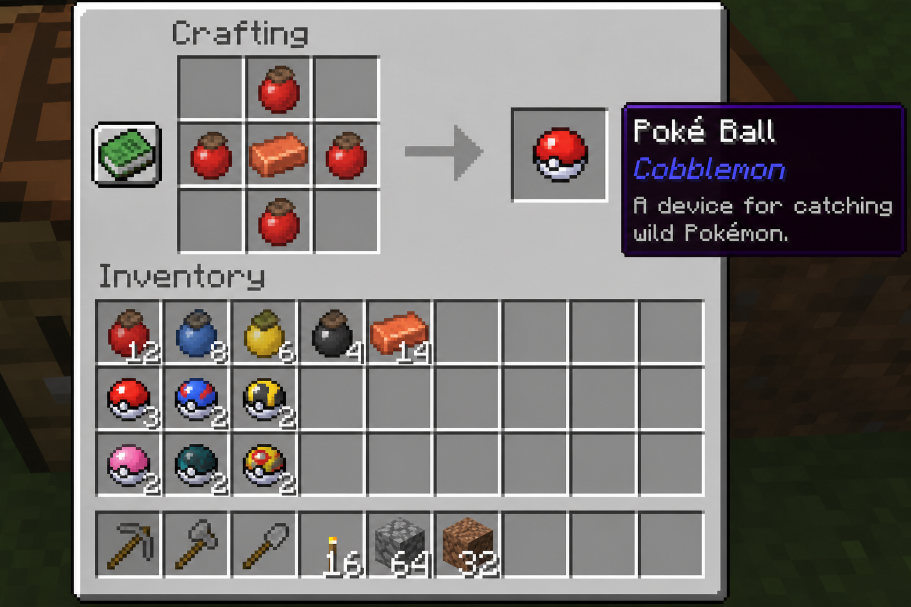
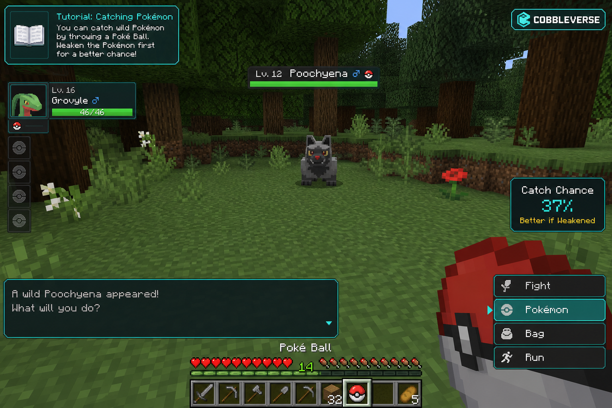

Fishing
On CobbleVerse / PokeHaven EU you can fish up Pokémon — not only vanilla fish. Use Cobblemon rods in the right water biome.
Contents
Why fish?
This pack has 599 fishing spawn rows. Many Water types (and some ultra-rares) show up on the rod that you rarely meet on land. Use it for Misty coverage, ocean hunts, and shiny side projects — not only AFK fluff.
How to start
{kind=link}

- Search REI for Poke Rod / rod and craft a Cobblemon rod (Poke → Great → Ultra → Master, or themed rods like Lure / Net / Dive).
- Stand next to water that matches the biome you want (river / lake vs ocean / coast).
- Cast, wait for the bite bobber, reel in — a wild Pokémon encounter can start instead of a fish item.
- Catch with balls as usual. Keep a claimed dock if you AFK.
{kind=link}

Important
Use Cobblemon rods for Pokémon. If you only get sticks and pufferfish, you are probably on a vanilla rod or the wrong water/biome.
Rods, lure level & bait
- Rod tiers raise lure level. Higher lure unlocks rows that require
minLureLevel1–3+. - Themed rods (Net, Dive, Friend, Lure, …) craft via REI; chests can drop damaged rods.
- Bait — attach / use when the tooltip allows. REI search: bait.
- You do not need a Pokémon in your party to fish on PokeHaven EU.
Where to cast
- Freshwater (~73 tagged rows) — rivers / lakes: Psyduck, Goldeen, Squirtle (ultra-rare), …
- Ocean / coast (~260 tagged rows) — Tentacool, Horsea, Staryu, Chinchou, Lapras, Relicanth, …
- Some species also have submerged / surface rows (swim/boat). Context
fishingis rod-only. - Move biomes if you only see the same commons — the pool is tag-driven.
Pack examples (fishing context)
Sample rows from CobbleVerse spawn data on this wiki. Weights are relative within the pool — not a guarantee “next cast”.
| Pokémon | Bucket | Levels | Typical biomes (tags) | Lookup |
|---|---|---|---|---|
| Magikarp | common | 1–20 | is_overworld (+ Aether) | open |
| Psyduck | common | 7–32 | is_freshwater, forest, grassland, … | open |
| Goldeen | common | 7–32 | many freshwater / temperate tags | open |
| Tentacool | common | 9–29 | is_ocean / overworld | open |
| Staryu | common–uncommon | 9–34 | coast, ocean, tropical island | open |
| Squirtle | ultra-rare | 5–31 | freshwater + hills / jungle / temperate / tropical | open |
| Lapras | common–ultra-rare | 29–54 | frozen ocean / ocean (higher levels) | open |
| Relicanth | common–rare | 24–49 | deep ocean / ocean | open |
Spawn lookup — worked examples
- Open Spawn lookup with Context = fishing.
- Type a species in Pokémon name (example: tentacool).
- Or filter biomes: fishing + freshwater · fishing + ocean.
- Combine both when hunting a rare: squirtle + freshwater.
- Read Bucket + Level — ultra-rare + high level means bring Ultra Balls and respect the level cap.
Quick fixes
| Symptom | Try |
|---|---|
| Only vanilla fish / junk | Switch to a Cobblemon rod (REI: Poke Rod) |
| Same commons forever | Change biome (river ↔ ocean); check lookup tags |
| Want Misty Water types | Freshwater dock + Psyduck / Goldeen loop — Misty |
| AFK dock griefed | FTB Chunks around the pier |
Gym tip
Fishing is great for Water coverage before Misty / later oceans, but the level cap still applies — do not overlevel while grinding bites.
See also: Spawn lookup (fishing) · Catching & battling · Shiny hunting · Claims